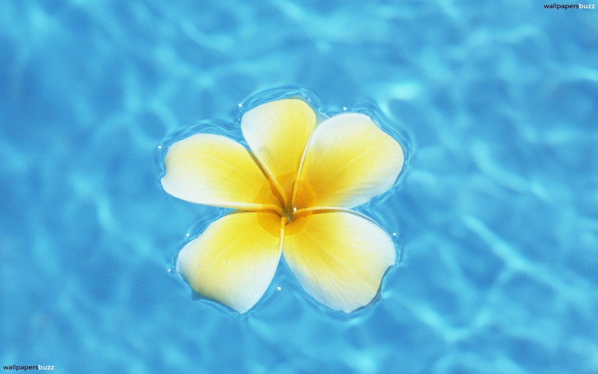
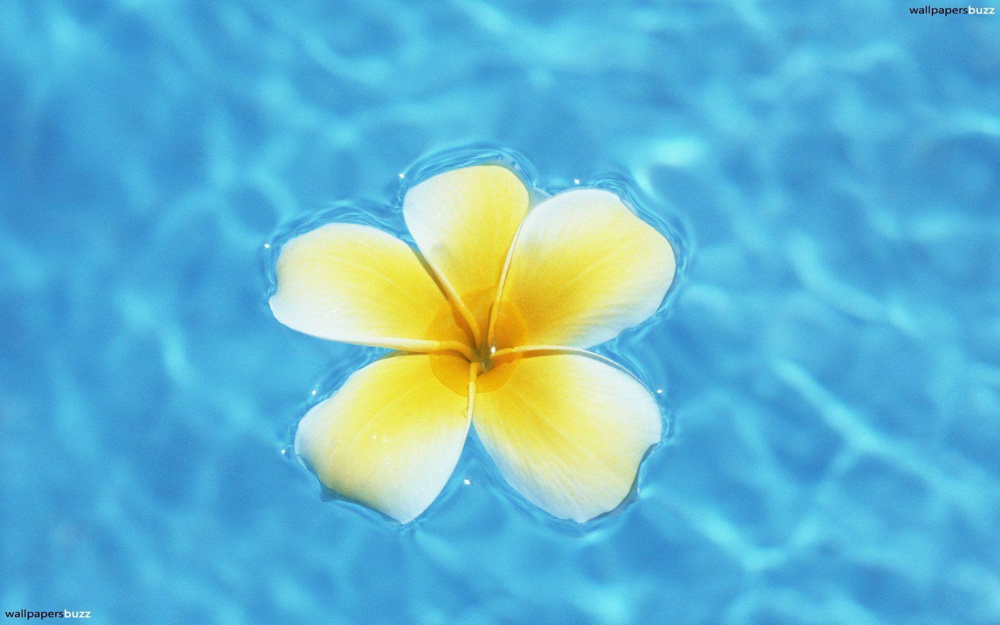

About us
The essential parts of a flower can be considered in two parts: the vegetative part, consisting of
petals and associated structures in the perianth, and the reproductive or sexual parts.
A stereotypical flower consists of four kinds of structures attached to the tip of a short stalk.
Each of these kinds of parts is arranged in a whorl on the receptacle. The four main whorls
(starting from the base of the flower or lowest node and working upwards) are as follows:
Main articles: Perianth, Sepal, and Corolla (flower)
Collectively the calyx and corolla form the perianth.
Calyx: the outermost whorl consisting of units called sepals; these are typically green and
enclose the rest of the flower in the bud stage, however, they can be absent or prominent and
petal-like in some species.
Corolla: the next whorl toward the apex, composed of units called petals, which are typically
thin, soft and colored to attract animals that help the process of pollination.
Reproductive
Main articles: Plant reproductive morphology, Androecium, and Gynoecium
Reproductive parts of Easter Lily (Lilium longiflorum). 1. Stigma, 2. Style, 3. Stamens, 4. Filament,
5. Petal
Androecium (from Greek andros oikia: man's house): the next whorl (sometimes multiplied into
several whorls), consisting of units called stamens. Stamens consist of two parts: a stalk called a
filament, topped by an anther where pollen is produced by meiosis and eventually dispersed.
Gynoecium (from Greek gynaikos oikia: woman's house): the innermost whorl of a flower, consisting of
one or more units called carpels. The carpel or multiple fused carpels form a hollow structure called
an ovary, which produces ovules internally. Ovules are megasporangia and they in turn produce
megaspores by meiosis which develop into female gametophytes. These give rise to egg cells. The
gynoecium of a flower is also described using an alternative terminology wherein the structure
one sees in the innermost whorl (consisting of an ovary, style and stigma) is called a pistil.
A pistil may consist of a single carpel or a number of carpels fused together. The sticky tip of the
pistil, the stigma, is the receptor of pollen. The supportive stalk, the style, becomes the pathway
for pollen tubes to grow from pollen grains adhering to the stigma. The relationship to the gynoecium
on the receptacle is described as hypogynous (beneath a superior ovary), perigynous (surrounding a
superior ovary), or epigynous (above inferior ovary).
Although the arrangement described above is considered "typical", plant species show a wide variation
in floral structure.[1] These modifications have significance in the evolution of flowering plants and
are used extensively by botanists to establish relationships among plant species.
The four main parts of a flower are generally defined by their positions on the receptacle and not
by their function. Many flowers lack some parts or parts may be modified into other functions and/or
look like what is typically another part. In some families, like Ranunculaceae, the petals are greatly
reduced and in many species the sepals are colorful and petal-like. Other flowers have modified stamens
that are petal-like; the double flowers of Peonies and Roses are mostly petaloid stamens.[2] Flowers
show great variation and plant scientists describe this variation in a systematic way to identify
and distinguish species.
Specific terminology is used to describe flowers and their parts.
Left: A normal zygomorphic Streptocarpus flower. Right: An aberrant peloric Streptocarpus flower.
Both of these flowers appeared on the Streptocarpus hybrid 'Anderson's Crows' Wings'.
Many flowers have a symmetry. When the perianth is bisected through the central axis from any
point and symmetrical halves are produced, the flower is said to be actinomorphic or regular,
e.g. rose or trillium. This is an example of radial symmetry. When flowers are bisected and
produce only one line that produces symmetrical halves, the flower is said to be irregular or
zygomorphic, e.g. snapdragon or most orchids.
Flowers may be directly attached to the plant at their base (sessile—the supporting stalk
or stem is highly reduced or absent). The stem or stalk subtending a flower is called a peduncle.
If a peduncle supports more than one flower, the stems connecting each flower to the main axis are
called pedicels. The apex of a flowering stem forms a terminal swelling which is called the torus
or receptacle.
The familiar calla lily is not a single flower. It is actually an inflorescence of tiny flowers
pressed together on a central stalk that is surrounded by a large petal-like bract.
Main article: Inflorescence
In those species that have more than one flower on an axis, the collective cluster of flowers
is termed an inflorescence. Some inflorescences are composed of many small flowers arranged in
a formation that resembles a single flower. The common example of this is most members of the
very large composite (Asteraceae) group. A single daisy or sunflower, for example, is not a
flower but a flower head—an inflorescence composed of numerous flowers (or florets). An inflorescence
may include specialized stems and modified leaves known as bracts.
Main articles: Floral formula and Floral diagram
A floral formula is a way to represent the structure of a flower using specific letters, numbers
and symbols, presenting substantial information about the flower in a compact form. It can represent
a taxon, usually giving ranges of the numbers of different organs, or particular species. Floral
formulae have been developed in the early 19th century and their use has declined since. Prenner
et al. (2010) devised an extension of the existing model to broaden the descriptive capability of
the formula.[6] The format of floral formulae differs in different parts of the world, yet they
convey the same information.[7][8][9][10]
The structure of a flower can also be expressed by the means of floral diagrams. The use of schematic
diagrams can replace long descriptions or complicated drawings as a tool for understanding both floral
structure and evolution. Such diagrams may show important features of flowers, including the relative
positions of the various organs, including the presence of fusion and symmetry, as well as structural
details.[7]
A flower develops on a modified shoot or axis from a determinate apical meristem (determinate meaning
the axis grows to a set size). It has compressed internodes, bearing structures that in classical plant
morphology are interpreted as highly modified leaves.[11] Detailed developmental studies, however,
have shown that stamens are often initiated more or less like modified stems (caulomes) that in some
cases may even resemble branchlets.[5][1] Taking into account the whole diversity in the development
of the androecium of flowering plants, we find a continuum between modified leaves (phyllomes),
modified stems (caulomes), and modified branchlets (shoots).[12][13]
The transition to flowering is one of the major phase changes that a plant makes during its life cycle.
The transition must take place at a time that is favorable for fertilization and the formation of seeds,
hence ensuring maximal reproductive success. To meet these needs a plant is able to interpret important
endogenous and environmental cues such as changes in levels of plant hormones and seasonable temperature
nd photoperiod changes.[14] Many perennial and most biennial plants require vernalization to flower.
The molecular interpretation of these signals is through the transmission of a complex signal known
as florigen, which involves a variety of genes, including CONSTANS, FLOWERING LOCUS C and FLOWERING
LOCUS T. Florigen is produced in the leaves in reproductively favorable conditions and acts in buds
and growing tips to induce a number of different physiological and morphological changes.[15]
The first step of the transition is the transformation of the vegetative stem primordia into floral
primordia. This occurs as biochemical changes take place to change cellular differentiation of leaf,
bud and stem tissues into tissue that will grow into the reproductive organs. Growth of the central
part of the stem tip stops or flattens out and the sides develop protuberances in a whorled or spiral
fashion around the outside of the stem end. These protuberances develop into the sepals, petals,
stamens, and carpels. Once this process begins, in most plants, it cannot be reversed and the stems
develop flowers, even if the initial start of the flower formation event was dependent of some
environmental cue.[16] Once the process begins, even if that cue is removed the stem will continue
to develop a flower.
Yvonne Aitken has shown that flowering transition depends on a number of factors, and that plants
flowering earliest under given conditions had the least dependence on climate whereas later-flowering
varieties reacted strongly to the climate setup.
Main article: ABC model of flower development
The ABC model of flower development
The molecular control of floral organ identity determination appears to be fairly well understood in
some species. In a simple model, three gene activities interact in a combinatorial manner to determine
the developmental identities of the organ primordia within the floral meristem. These gene functions
are called A, B and C-gene functions. In the first floral whorl only A-genes are expressed, leading to
the formation of sepals. In the second whorl both A- and B-genes are expressed, leading to the
formation of petals. In the third whorl, B and C genes interact to form stamens and in the center
of the flower C-genes alone give rise to carpels. The model is based upon studies of mutants in
Arabidopsis thaliana and snapdragon, Antirrhinum majus. For example, when there is a loss of B-gene
function, mutant flowers are produced with sepals in the first whorl as usual, but also in the second
whorl instead of the normal petal formation. In the third whorl the lack of B function but presence
of C-function mimics the fourth whorl, leading to the formation of carpels also in the third whorl.
Most genes central in this model belong to the MADS-box genes and are transcription factors
that regulate the expression of the genes specific for each floral organ.
Did you know there are over 400,000 plant species across the world?
In other words, that’s more
than the number of bird, butterfly and bee species, combined! While many flowers grow
naturally in forests, grasslands, deserts and tundras, growing your own garden or
picking up a bouquet is a great way to create your own oasis.
How do you pick the right type of flowers for your needs?
With literally hundreds of thousands to
choose from, it can be overwhelming! That’s why we’ve compiled
our handy guide below of a few of the most
common flower fypes in S.A. Wondering how much sun or soil your flower will
need?
Where it grows best? How to make a fabulous bouquet for your indoor table?
Aconites are one of the first bulb flowers to bloom in the spring and are known
for their cheerful yellow color.
Plant Aconites in a large group together and you'll be able to smell their sweet,
honey-like fragrance.
If you don’t know what to get, here are some of the best flowers to buy for any occasion.
With Blossom Site, you can buy cheerful birthday blooms, thoughtful Mother's Day bouquets,
funeral and sympathy flower arrangements, and your everyday beautiful florals.
With a huge variety of floral arrangements, we’re sure you'll be able to find the right
gift for everyone on your list.
If you don’t know what flowers to buy, you can shop flowers
by type: roses, carnations, daisies,
tulips, lilies, and more. You can also shop by occasion for a quick
glance at the top bouquets or use our recipient guide to help you
find the perfect gift.
 Here is a bit about roses:
Red roses are recognized the world over as a symbol of love, beauty, passion and desire.
These associations go back as far as the Greeks, who originally associated the red
rose with Aphrodite, the goddess of love. The story states that when her love was
wounded, she pricked her foot on the thorn of a white rose in her attempt to run to him.
Her blood turned the rose red, in a symbol of romantic devotion and passion. The red rose
was also very popular in 15th and 16th century England when it became the
symbol of the newly crowned Tudor king.
Even though red roses are commonly given as a gift on Valentine’s Day, red roses can be given all
year long as a way to express your love and passion for someone. They also look beautiful in gardens.
Here is a bit about roses:
Red roses are recognized the world over as a symbol of love, beauty, passion and desire.
These associations go back as far as the Greeks, who originally associated the red
rose with Aphrodite, the goddess of love. The story states that when her love was
wounded, she pricked her foot on the thorn of a white rose in her attempt to run to him.
Her blood turned the rose red, in a symbol of romantic devotion and passion. The red rose
was also very popular in 15th and 16th century England when it became the
symbol of the newly crowned Tudor king.
Even though red roses are commonly given as a gift on Valentine’s Day, red roses can be given all
year long as a way to express your love and passion for someone. They also look beautiful in gardens.
 
